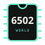

MC6847
LOADING32 × 16 display
Atom display loading

6502 WORLD2.2 · ATOM SOFTWARE
Boot canonical firmware, select utility and DOS expansions, load ATM programs, work with private disk copies, and type through the real 8255 keyboard matrix.
Atom display loading